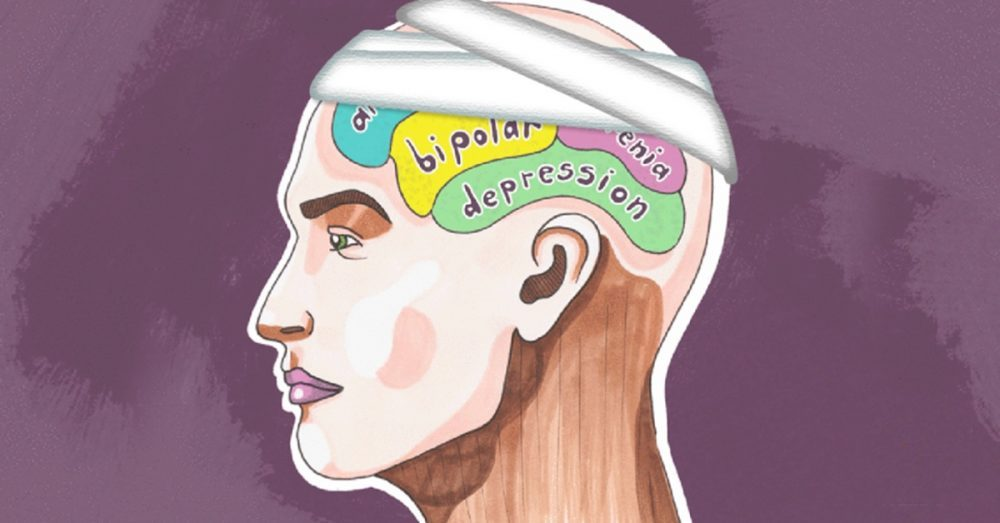

Las enfermedades o trastornos mentales son afecciones que impactan el pensamiento, sentimientos, estado de ánimo y comportamiento de una persona. Pueden ser ocasionales o duraderas (crónicas) y pueden afectar su capacidad de relacionarse con los demás y funcionar cada día.
Hay muchos factores que influyen en la aparición de las enfermedades mentales. Estos involucran la genética, la historia familiar, las experiencias de vida, la biología y los factores sociales.
En cuanto a la genética, se ha evidenciado que la enfermedad mental es más común en personas cuyos parientes también la padecen, pues hay genes que pueden aumentar el riesgo de contraerla. Sin embargo, el mayor desencadenante puede ser una situación o experiencia de vida.
La exposición a factores de estrés, enfermedades inflamatorias, toxinas, drogas o alcohol en el útero también puede asociarse, en algunos casos, con la enfermedad mental, así como las alteraciones en redes cerebrales.
La clasificación de las enfermedades o trastornos mentales es un tema importante para las personas propensas a ser diagnosticadas. Actualmente hay dos sistemas establecidos para su clasificación, entre ellos el Manual Diagnóstico y Estadístico de los Trastornos mentales (DSM-5) y el Capítulo V de la Clasificación Internacional de Enfermedades (CIE-10) creado por la organización mundial de la salud (OMS). A continuación presentaremos las tipologías más comunes que se encuentran en la última versión del DSM-V con una breve descripción:
Estos trastornos forman un tipo de enfermedad mental que se caracteriza por la presencia de déficits y dificultades en diferentes habilidades y capacidades que se manifiestan mayormente en el desarrollo evolutivo de la persona, en donde sus primeros síntomas aparecen durante la infancia.
En este tipo de trastorno, se presenta una sintomatología común, y es la presencia de síntomas positivos, agregando o exagerando algún aspecto a su conducta, como negativos, en donde se disminuye la capacidad del individuo.
Es un tipo de enfermedad mental en la que las personas sufren cambios en su estado de ánimo pasando de la manía a la depresión. Estos cambios producen un gran desgaste emocional en el paciente, que pasa de estar completamente eufórico y con un muy elevado nivel de energía a una situación de tristeza, desmotivación y desesperanza.
Es un tipo de trastorno psicológico muy común entre la población general que afecta de manera negativa a la forma en la que la persona se siente, piensa y actúa. Sus síntomas más característicos son: tristeza y vacío emocional, insomnio, pérdida de interés por realizar actividades, perdida o aumento del apetito, cansancio, dolor de cabeza, irritabilidad, sentimientos de culpa, pérdida de la esperanza e incluso ideas de suicidio.
La ansiedad es una respuesta emocional anticipatoria ante un peligro indefinido, confuso o irreal, la cual se caracteriza por un estado de inquietud. Esta enfermedad puede ser ocasionada por una tendencia genética, sin embargo lo que la puede disparar su aparición es la vivencia de un trauma o experiencia dolorosa.
Este tipo de enfermedad se caracteiza por la presencia de un perfil de conduta rigigo e inflexible, la presencia de dudas y niveles de perfeccioneismo. En los TOC, las personas presentan obsesiones irracionales que les hacen llevar a cabo comportamientos compulsivos una y otra vez. A pesar de que su gravedad varia, este trastorno genera mucha angustia en la persona que lo padece, por lo tanto puede afectar su vida diaria.
Este tipo de trastorno se caracteriza en la vivencia de situaciones de la vida determinadas o por la presencia o ausencia de un estresor concreto, que siendo vividas de forma muy aversiva provocan en el paciente un patrón de comportamiento diferente al que tendría si no hubiese vivido estas situaciones, y que produce mucho malestar en forma de crisis.
El trastorno más característico de esta categoría es el trastorno por estrés postraumático.
En este tipo de trastorno las personas que lo padecen sienten una desconexión y falta de continuidad entre sus pensamientos, recuerdos, entornos, acciones e identidad y a raíz de esto tratan de escapar de la realidad de forma involuntaria, lo que les causa problemas con su funcionamiento diario.
Los trastornos somáticos tienen como principal característica la presencia de síntomas físicos sin que haya una causa fisiológica para ella, siendo simplemente síntomas físicos productos de la propia mente. Su trastorno más característico es la hipocondría.
Este tipo de enfermedad se define por tener hábitos alimenticios anormales que afectan gravemente a la salud mental y física de la persona que los padece. Entre los trastornos más conocidos se encuentran la bulimia, y la anorexia.
Ten en cuenta que hay muchos tipos de trastornos y cada uno de estos tiene sintomas diferentes, además de un tratamiento específico para cada caso. Para saber más,haz click en el siguiente video...